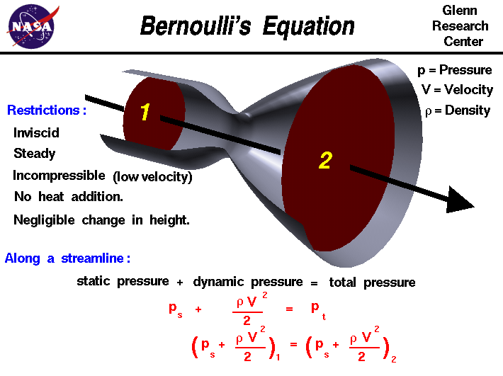

|

In the 1700s,
Daniel Bernoulli
investigated the forces present in a moving
fluid.
This slide shows one of many forms of Bernoulli's
equation. The equation appears in many physics,
fluid mechanics, and airplane textbooks.
The equation states that the
static pressure
ps in the flow plus the
dynamic pressure,
one half of the density r times the velocity V squared,
is equal to a constant throughout
the flow. We call this constant the total pressure pt of the flow.
As discussed on the
gas properties
page, there are two ways to look at a fluid; from the large, macro scale
properties of the fluid that we can measure, and from the small, micro scale
of the molecular motion and interaction.
On this page, we will consider Bernoulli's equation from both standpoints.
Macro Scale Derivation
Thermodynamics
is the branch of science which describes the macro scale properties
of a fluid. One of the principle results of the study of
thermodynamics is the
conservation of energy;
within a system, energy is neither created nor destroyed but may be converted from
one form to another. We shall derive Bernoulli's equation by starting with
the conservation of energy equation.
The most general form for the conservation of energy is given on the
Navier-Stokes equation
page. This formula includes the effects of unsteady flows and
viscous
interactions. Assuming a steady, inviscid flow we have a simplified
conservation of energy equation in terms of the
enthalpy of the fluid:
ht2 - ht1 = q - wsh
where ht is the total enthalpy
of the fluid, q is the
heat transfer
into the fluid, and wsh is the
useful work done by the fluid.
Assuming no heat transfer into the fluid, and no work done by the fluid, we
have:
ht2 = ht1
From the definition of total enthalpy:
e2 + (p * v)2 + (.5 * V^2)2 = e1 + (p * v)1 + (.5 * V^2)1
where e is the
internal energy,
p is the
pressure,
v is the
specific volume, and
V is the velocity of the fluid.
From the
first law of thermodynamics
if there is no work and no heat transfer, the internal energy remains the same:
(p * v)2 + (.5 * V^2)2 = (p * v)1 + (.5 * V^2)1
The specific volume is the inverse of the fluid density r:
(p / r)2 + (.5 * V^2)2 = (p / r)1 + (.5 * V^2)1
Assuming that the flow is incompressible, the density is a constant. Multiplying the energy equation by the constant density:
(ps)2 + (.5 * r * V^2)2 = (ps)1 + (.5 * r * V^2)1 = a constant = pt
This is the simplest form of Bernoulli's equation and the one most often
quoted in textbooks.
If we make different assumptions in the derivation, we can
derive other forms of the equation.
It is important when applying any equation that you are aware of
the restrictions on its use; the restrictions usually arise in the
derivation of the equation when certain simplifying assumptions about
the nature of the problem are made. If you ignore the restrictions,
you may often get an incorrect "answer" from the equation. For
instance, this form of the equation was derived while assuming that
the flow was incompressible, which means
that the speed of the flow is much less than the speed of sound. If
you use this form for a supersonic flow, the answer will be
wrong.
Molecular Scale Derivation
We can make another interpretation of the equation by
considering the
motion
of the gas molecules. The molecules
within a fluid are in constant random motion and collide with each
other and with the walls of an object in the fluid. The motion of the
molecules gives the molecules a linear momentum
and the fluid pressure
is a measure of this momentum. If a gas is at rest, all of the motion
of the molecules is random and the pressure that we detect is the
total pressure of the gas. If the gas is set in motion or
flows, some of the random components of velocity are changed in favor
of the directed motion. We call the directed motion "ordered," as
opposed to the disordered random motion.
We can associate a "pressure" with the momentum of the ordered
motion of the gas. We call this pressure the
dynamic pressure.
The remaining random motion of the molecules still produces a
pressure called the static pressure. At the molecular level,
there is no distinction between random and ordered motion. Each
molecule has a velocity in some direction until it collides with
another molecule and the velocity is changed. But when you sum up all
the velocities of all the molecules you will detect the ordered
motion. From a conservation of energy and momentum, the static
pressure plus the dynamic pressure is equal to the original total
pressure in a flow (assuming we do not add or subtract energy in the
flow). The form of the dynamic pressure is the density times the
square of the velocity divided by two.
Applications of Bernoulli's Equation
The fluids problem shown on this slide is low speed flow through a
tube with changing cross-sectional area. For a streamline along the
center of the tube, the velocity decreases from station one to two.
Bernoulli's equation describes the relation between velocity,
density, and pressure for this flow problem. Since density is a constant
for a low speed problem, the equation at the bottom of the slide
relates the pressure and velocity at station two to the conditions
at station one.
Along a low speed
airfoil,
the flow is incompressible and the density remains a
constant. Bernoulli's equation then reduces to a simple relation
between velocity and static pressure. The surface of the airfoil is a
streamline.
Since the velocity varies
along the streamline, Bernoulli's equation can be used to compute the change
in pressure. The static pressure integrated along the entire surface
of the airfoil gives the total aerodynamic
force on the foil. This force can be broken down into the
lift and drag of the airfoil.
Bernoulli's equation is also used on aircraft to provide a speedometer
called a pitot-static tube. A pressure is quite
easy to measure with a mechanical device. In a pitot-static tube, we measure
the static and total pressure and can then use Bernoulli's equation
to compute the velocity.
Activities:


^M
Guided Tours
-
 Basic Fluid Dynamics Equations:
Basic Fluid Dynamics Equations:

-
Pitot-Static Tube:
Navigation ..


- Beginner's Guide Home Page
|